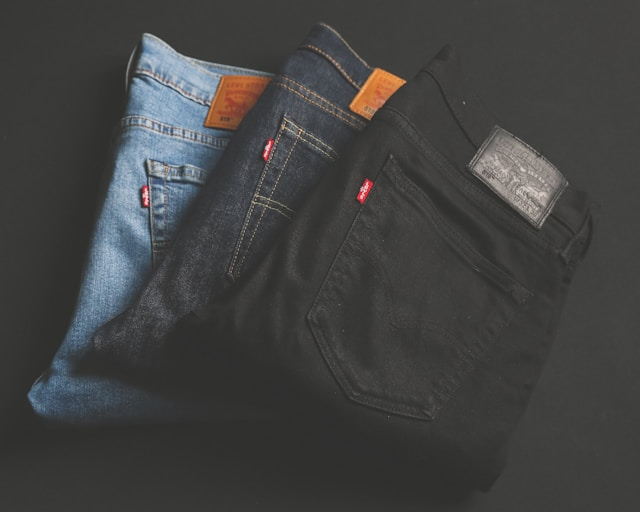

Jeans and T-shirts can be the wardrobe staples for years. Simple or
dressed to perfection, they can be put together to form as many styles
as you can. But what makes this casual combination elegant and
thought-over? This is a more in-depth guide on how to style jeans and
T-shirts perfectly: proper fitting, accessorizing, and even different
occasions. And by the end of this, you will know how to easily pull off
this fabulous, timeless style combination.
1. Why Jeans and T-shirts Remains An Eternally Trendy Pair
This style of jeans and a T-shirt is fashionably easy, yet it remains
fashionable so long. So, what's the reason for this perfect pair
dominating fashion trends?
-
Simplicity with Versatility: The minimalist design of jeans and
T-shirts may indeed truly be a blank canvas, which forms the base for
creating multiple different looks from casual to sophisticated.
-
Comfort: Both pieces are known for being comfortable, making them a
go-to for everyday wear.
-
Inclusiveness: These jeans and T-shirts can fit people from any age,
size, and gender. People of all categories are empowered to done this
universal style.
2 Brief History of Jeans and T-Shirts
While jeans and T-shirts are modern staples of any clothing, each has a
history that predates centuries.
-
Jeans: Denim jeans because of their durability, were workwear for
miners and laborers in the late 1800s. The first blue jeans were
patented in 1873 by Levi Strauss and Jacob Davis. Then, all these
years were full of rebellion and youth culture thanks to James Dean,
who appeared in the film Rebel Without a Cause, and Marlon Brando.
Now, they stand for casual comfort with effortless style.
-
T-Shirts: From their origin in the 19th century as vests, T-shirts
became the epitome of casual wear in the 1950s when Marlon Brando and
James Dean made them an iconic part of movies. In the 1970s, T-shirts
became the presentation of art wherein band tees and graphic prints
caught on. Today, they are not to be missed from the wardrobe.
This makes them staple pieces in generational wardrobes, a combination
that reflects not just comfort but also cultural significance.
3. The Best Pair of Jeans to Suit Your Body Form
Find that perfect pair of jeans with an understanding of your body
shape. The following is the guide to picking the best fit for each body
shape.
-
For Hourglass Figures
High-waisted, bootcut, or straight-leg jeans draw attention to the
waist and balance out your body shape. Avoid low-rise jeans that can
distort your natural shape.
-
For Apple-Shaped Figures
Good are those at mid-rise or high-rise jeans, which smooth out and
lengthen the figure. Balance can be achieved by using the
straight-leg or slightly flared styles that would shift focus away
from the midsection.
-
For Pear-Shaped Figures
For smaller waist, choose jeans that have a high waist to add curves
to your silhouette. Bootcut or wide-leg styles can also help soften
the silhouette of wider hips. Dark-wash jeans also tend to slim you
down.
-
For Rectangle Figures
Boyfriend or flared jeans add more curves. Play around with
distressed and embellished styles for volume.
-
For Tall Figures:
High-rise or cropped styles become your best friends as you are a
tall person. Tall people really pull off those wide-leg and flared
jeans without overwhelming their frame because they will pair these
with fitted or tucked-in T-shirts to emphasize their height.
The key to a good jeans and tee look is finding the right T-shirt to fit
your body and style. Now, here's what to consider,
-
Fit
- Slim Fit: Ideal for tucking into jeans, giving you that tailored, put-together look.
- Relaxed Fit: This style does well with either skinny or straight-leg jeans for that laid-back feel. Even
tie it up or tuck it in to create balance for you.
liOversized Fit: The oversized T-shirt looks great teamed with fitted jeans for the perfect balanced relaxed
look.
-
Fabric
- Cotton: Easy to breathe and soft, cotton tops are good enough for casual wear and is a good choice for
casual attires.
- Linen: It is a light material which is airy. Perfect for summer days, especially when it's pretty hot.
- Blends: Cotton-polyester blend is more durable and shows less shrinkage. These are thus great for everyday
wear.
-
Necklines
- Crew Neck: It is commonly flattering. However, great for casual, everyday wear.
- V-Neck: Has an elegant and a long neck that provides the attire with an attractive appeal .
- Scoop Neck: The shoulders carry a scoop neck, thus perfect in giving out a feminine touch. It is even
appropriate for layering jackets or even using accessories in their matching form.
5. Best T-Shirt & Jeans Pairings for Various Occasions
-
Casual Everyday Style
Light wash jeans under an everyday basic white crew-neck T-shirt would do perfectly with white sneaker
accompaniments. That's it for an effortlessly chic look. Have this set for your weekend errands or coffee
dates.
-
Chic and Polished Look
A fitted V-neck T-shirt and skinny jeans will make a classic, smart outfit. Pair the T-shirt with the jeans
and combine it with a boxy blazer for work chic comfort. Finish with heeled boots or loafers to soften the
look.
-
Streetwear Cool Swag
Pair distressed skinny jeans with a giant graphic T for an edgy streetwear look. Complete the look with a
leather jacket and bold boots to maximise the edge. Throwing together lots of accessories and sunglasses
finishes the look.
-
Summer Cool
Crop to your favourite skinny jeans and put on a light linen in neutral shades. Add some sandals or
espadrilles and a sun hat and voilà; you're the coolest creature this side of the equator.
-
Layered Fall/Winter Style
Wearing layered, cuddly tea-shops: layered a fitted long-sleeved T-shirt under a flannel shirt or oversized
cardigan. Pair straight-leg jeans and ankle boots with a scarf and beanie.
6. How to Tuck in Your T-Shirt Like a Pro
The tuck can take a normal jeans-and-T-shirt over the top. Three ways to tuck that tee:
- The Full Tuck: Great for high-waisted jeans and slim-fit T-shirts. Tuck the entire shirt into
your jeans and have a clean, streamlined look.
- The French Tuck: It works with loose-fitting T-shirts. Tuck in the front of your T-shirt into
your jeans and let the back out for that relaxed cool, chic look.
- The Knot: Tie a knot on the front of the over-sized T-shirt just above the waistband of your
high-waisted jeans - it's cute and playful.
7. How to Accessorize Jeans and T-Shirts
Accessories are what take your jeans and T-shirt from one level to the next. Consider some of the following
options:
- Belts: A leather or statement belt will really define the area of the waist; it will also
break up the
monotony of a T-shirt and jeans outfit.
- Jewellery: Layered necklaces, especially statement pieces like a large earring or a chocker
with an oversized
chain or pendants which rise above the firm line of a T-shirt will immediately update your look. Try to keep it
chic by using the tonal shades of gold or silver.
- Sunglasses: Classic aviators or oversized sunglasses will give an added flavor of coolness.
- Hats: A baseball cap or wide-brim hat will complement your style and finish off your
sun-kissed look.
8. Seasonal Styling Tips
-
Spring
Light-wash jeans and pale-coloured T-shirts make for spring season. Layering will come in quite handy during
those cooler days with the same denim jacket or lightweight trench coat.
-
Summer
Opt for cropped or distressed jeans and combine them with lightweight T-shirts in breathable fabrics, such as
linen or cotton. Slip on sandals or espadrilles to finish off the outfit.
-
Fall
The darker wash jeans are good for the cooler weather when paired with a long-sleeved T or knit. Layer with
cardigans, plaid shirts, or bombers.
-
Winter
Thicker denim and long-sleeved T's layered under coats, scarves, and beanies will also keep warm. Dark washes
or black jeans with a cozy oversized sweater are perfect for winter.
9. Celebrities as Inspiration
Need some inspiration? Take a cue from these celebrities and their penchant for wearing jeans with a T-shirt:
- Gigi Hadid: Gigi's casual-chic street style has been seen pairing high-waisted jeans with
cropped or fitted tees.
- Kendall Jenner: Kendall is particularly seen wearing ripped jeans with graphic tees to
underscorefully the harshness of the look.
- David Beckham: The soccer star often is found wearing straight-leg jeans along with slim-fit,
solid-colored T-shirts frequently wear a leather jacket or classic sunglasses for an elegant yet casual feel.
- Zendaya: The ratty ol' jeans and T have been brought to the forefront by Zendaya, who pairs
them with oversized blazers, statement jewelry, or unique footwear for a testament that this simple combination
can be ultra-fashionable.
10. Footwear: Putting the Outfit Together
Shoes can either make or break an outfit comprising jeans and a T-shirt. Here are suggestions that can be used to
dress the outfit for various occasions.
- Casual Sneakers : White or neutral-colored sneakers are good for creating a laid-back, every
day look. It makes any kind of jeans–skinnies, boyfriend cuts-tell a smooth story.
- With this, if one wants to dress up a little more, the jeans and tee pair really well with ankle boots-heeled
or flat. That's particularly well-suited for fall or winter.
- Loafers or Flats: These do go down as one of the great options for your business-casual vibe
where you want to look not too casual yet keep it comfortable as well.
- When the season is hot, the addition of sandals or even espadrilles to cropped or rolled-up jeans and a breezy
T-shirt adds an effortless touch.
- Heels: For a night out, simply upgrade your jeans and tee by including a pair of stilettos or
block heels. A fitted sleek tee and dark skinny jeans are popular with heels.
11. FAQs
Q1: What style jeans should be used with an oversized T-shirtp
For oversized T-shirts, balance the proportions in a skinny or slim-fit jean. For a streetwear take, you can pair
an oversized tee with boyfriend or straight-leg jeans as well.
Q2: How can I dress up a simple jeans and T-shirt outfit?
Of course, you can dress up this casual combo, like adding structured layers to a blazer and pairing it with
heeled boots or dressy loafers. Accessories, like statement jewelry and a sleek belt, can also transform the
outfit.
Q3: How about this one: Can I wear a T-shirt and jeans to a business casual event?
Yes, you can! You can go for dark wash jeans and a good quality fitted T-shirt. Then add a well-fitted tailored
blazer and formal shoes- loafers or heels will do the magic to the look.
With a simple classic white T and jeans, you can easily dress differently for the occasion. Instead, pair it with
light-wash distressed jeans for an ultra-relaxed look, or tuck into high-waisted dark jeans for a sleek, polished
one. Add some statement belt, sunglasses, and sneakers or ankle boots to your outfit.
12. Recommended Products
Levi’s 501 Original Fit Jeans
- Why we love it: Classic and versatile, these jeans pair perfectly with any T-shirt, offering a timeless look.
- Check it
Everlane Organic Cotton Crew
- Why we love it: This eco-friendly, high-quality cotton T-shirt is a must-have basic for any wardrobe.
- Check it
Vans Old Skool Sneakers
- Why we love it: A classic sneaker that complements both casual and edgy outfits, perfect for everyday wear.
- Check it
Madewell High-Rise Skinny Jeans
- Why we love it: These high-rise skinnies offer a flattering fit and work seamlessly with tucked-in T-shirts
for a polished look.
- Check it
Conclusion
A pair of jeans and a T-shirt is far from boring; it's sort of the ultimate style duo, never really to be
remembered because it can just be played around with ad infinitum. When adjusted, accessorized, and completed with
appropriate footwear, even in casual settings of informal daytime outings or more refined evening events, this
timeless classic combination is sure to really cut it. It doesn't matter if you prefer relaxed or tailored
aesthetics; regardless of which way you'll play around with your jeans and T-shirt, you're ensured comfort, style,
and being basically cool.